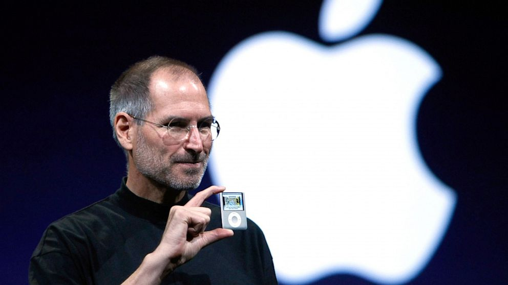
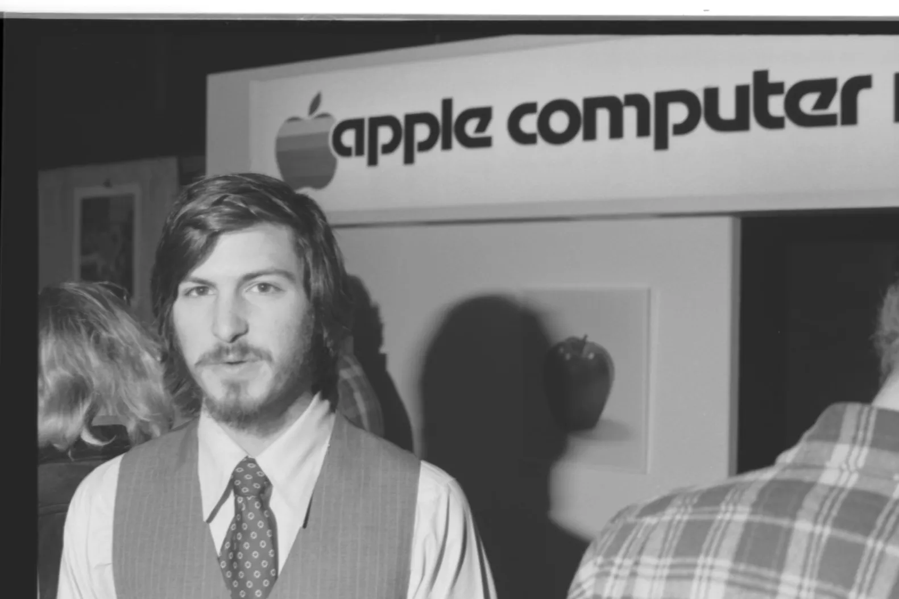

Steve Jobs was a revolutionary mind who influenced many personal computer evolutions between his birth and death. (February 24, 1955 - October 5, 2011) Steve Paul Jobs was also an incredible business man and entreprenur.
Figure (1)
Figure(2)
 (Figure 1) This is a photo of Steve Jobs holding up a new version of the iPod Nano during a Apple Special event on Sept, 5, 2007 in San Franciso.
(figure 2) Portrait of American businessman and engineer Steve Jobs, co-founder of Apple Computer Inc, at the first West Coast Computer Faire, where the Apple II computer was debuted, in Brooks Hall, San Francisco,April 17th, 1977.
(Rolling Stone.com)